In its early years the label issued mostly doo-wop acappella records, later branching into soul, disco, and funk.
Krause and Catamount helped launch the careers of groups including The Persuasions, 14 Karat Soul, the Royal Counts, Vintage, and Jo Ann & the Heartaches.
Records were pressed in small runs — often as few as 25 and no more than 200 copies — including green, blue, red, and bronze colored vinyl now more sought-after than black pressings, made possible by Kay Records, the Little Ferry pressing plant owned by Krause's father.
Skip Jackson, formerly of the Shantons, played a key production role at the label until his death in 1982.
Original label scans from the Catamount Records discography, the Jersey City acappella, doo-wop, and soul catalog Stan Krause built. Singles and LPs, in catalog order.
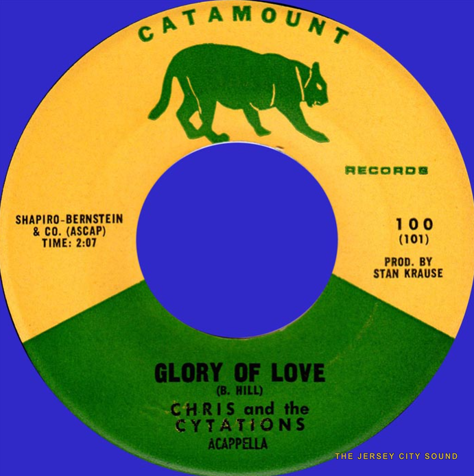
Chris and the Cytations — “Glory of Love” b/w “Unbelievable”. Catamount Records #100, 1965.
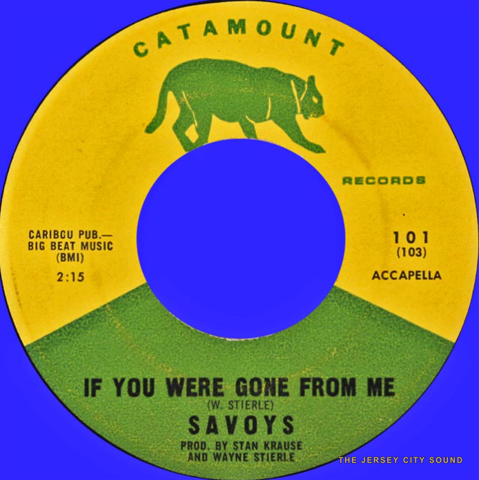
Savoys — “If You Were Gone From Me” b/w “Oh What A Dream”. Catamount Records #101, 1965.
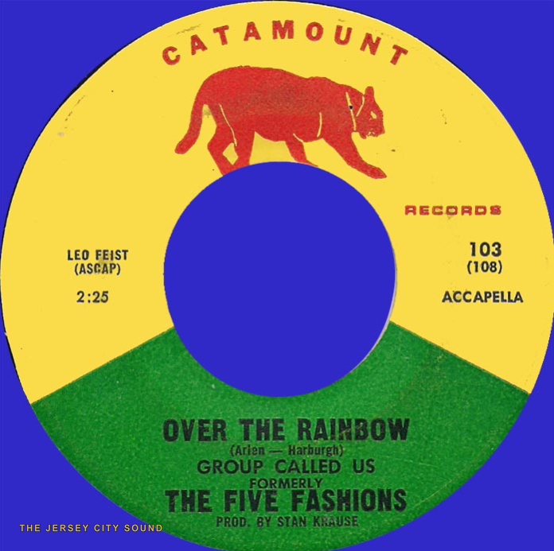
Group Called Us (formerly The Five Fashions) — “Solitaire” b/w “Over The Rainbow”. Catamount Records #103, 1965.
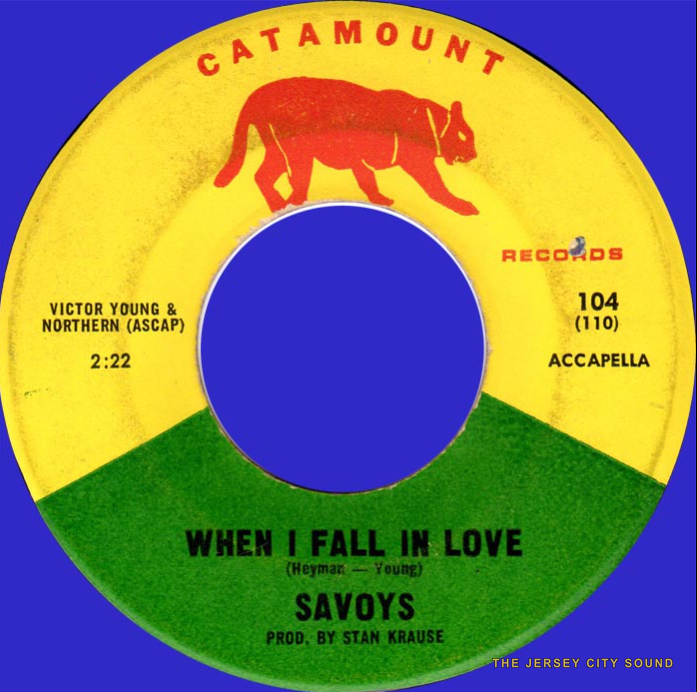
Savoys — “Crazy” b/w “When I Fall In Love”. Catamount Records #104, 1965.
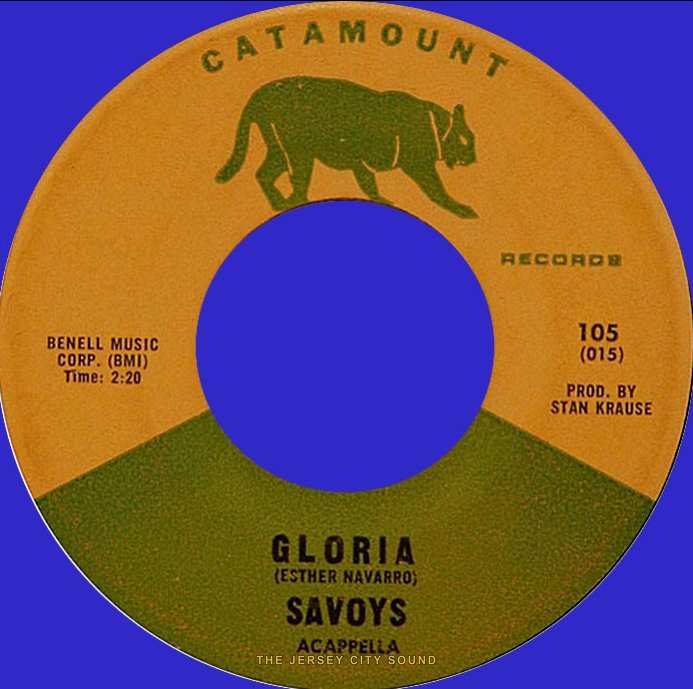
Savoys — “Gloria” b/w “The Closer You Are”. Catamount Records #105, 1965.
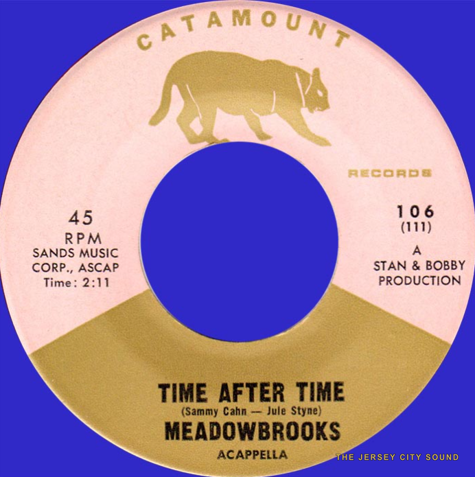
Meadowbrooks — “Time After Time” b/w “Seems Like Only Yesterday”. Catamount Records #106, 1965.
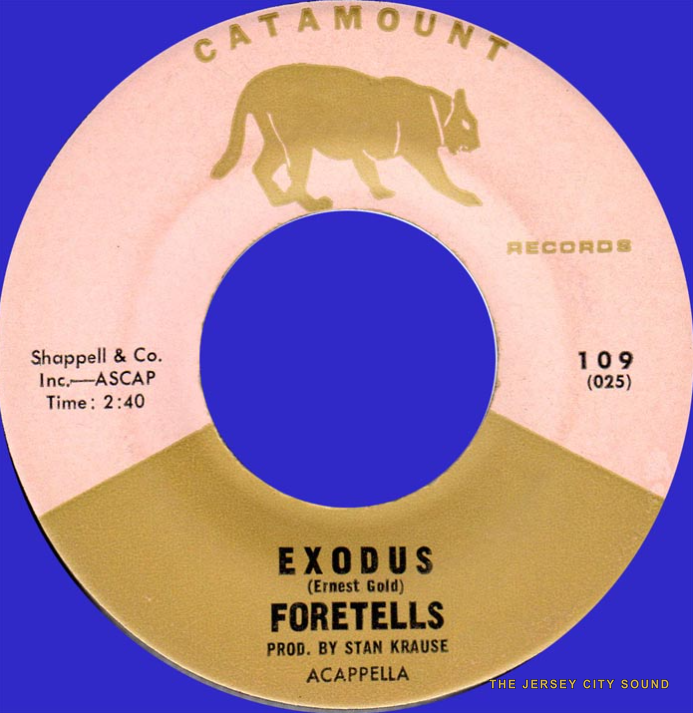
Foretells — “Exodus” b/w “Return To Me”. Catamount Records #109, 1965.
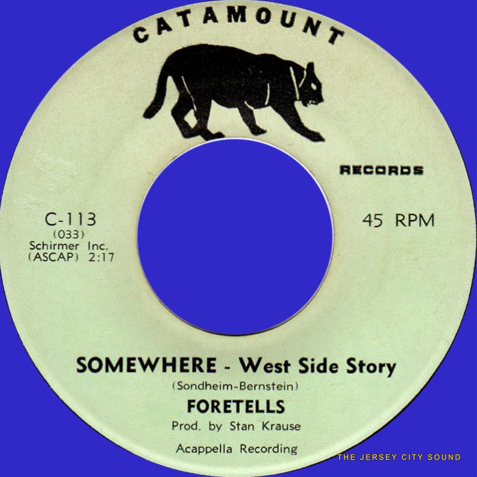
Foretells — “Somewhere (West Side Story)” b/w “Somewhere, Somewhere”. Catamount Records #113, 1966.
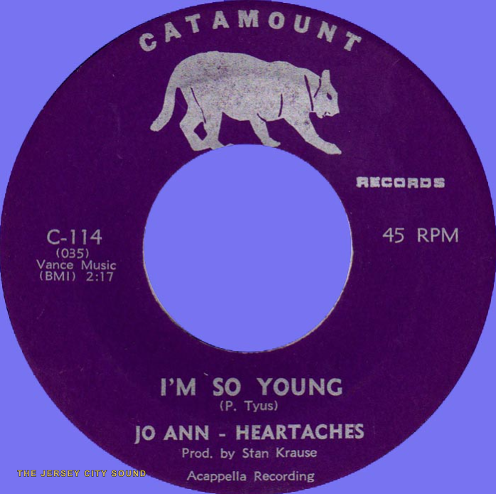
Jo Ann & Heartaches — “I'm So Young” b/w “A Lover's Call”. Catamount Records #114, 1966.
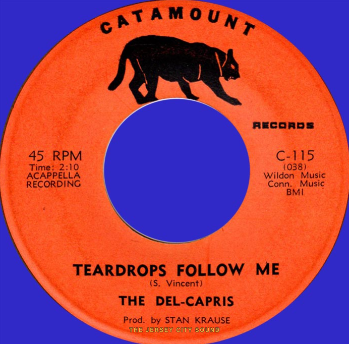
Del-Capris — “Man In The Moon” b/w “Teardrops Follow Me”. Catamount Records #115, 1966.
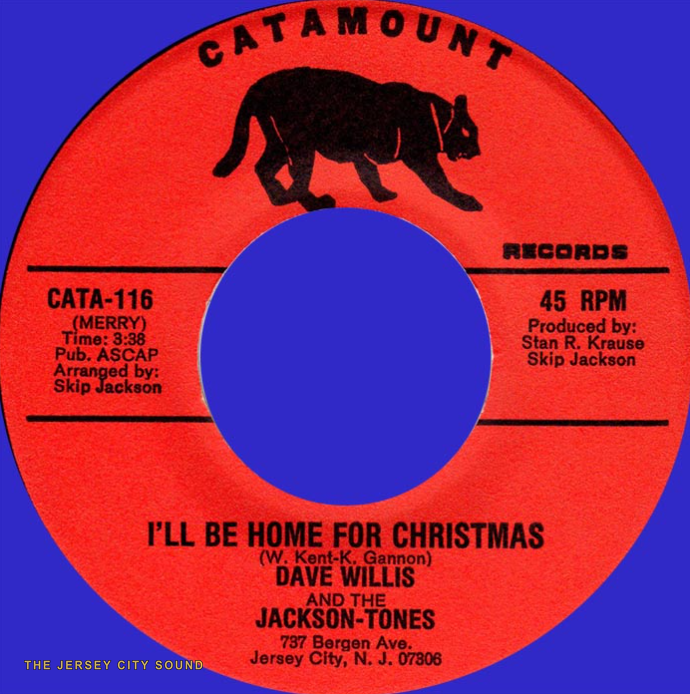
Dave Willis and the Jackson-Tones — “I'll Be Home For Christmas” b/w “After New Years Eve (Five Fashions)”. Catamount Records #116, 1966.
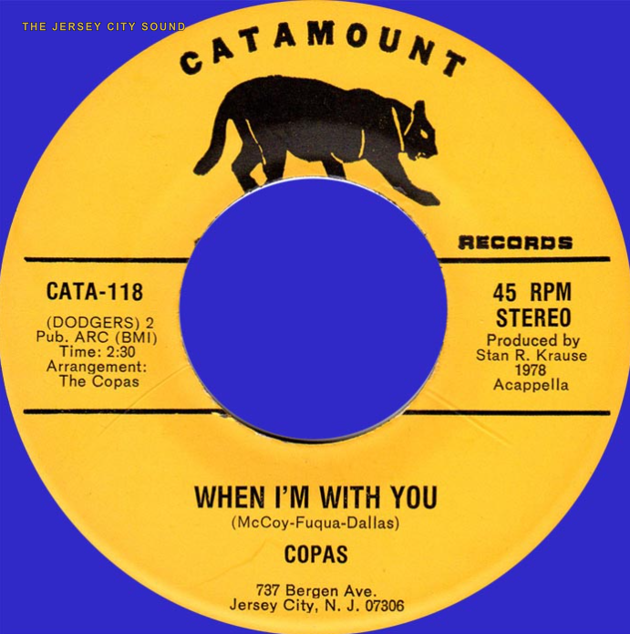
Copas — “When I'm With You” b/w “Heart and Soul”. Catamount Records #118, 1978.
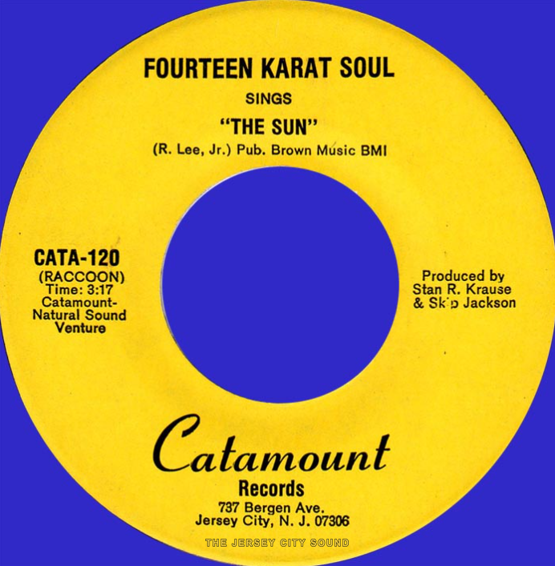
Fourteen Karat Soul — “Boogie Woogie Bugle Boy” b/w “The Sun”. Catamount Records #120, 1979.